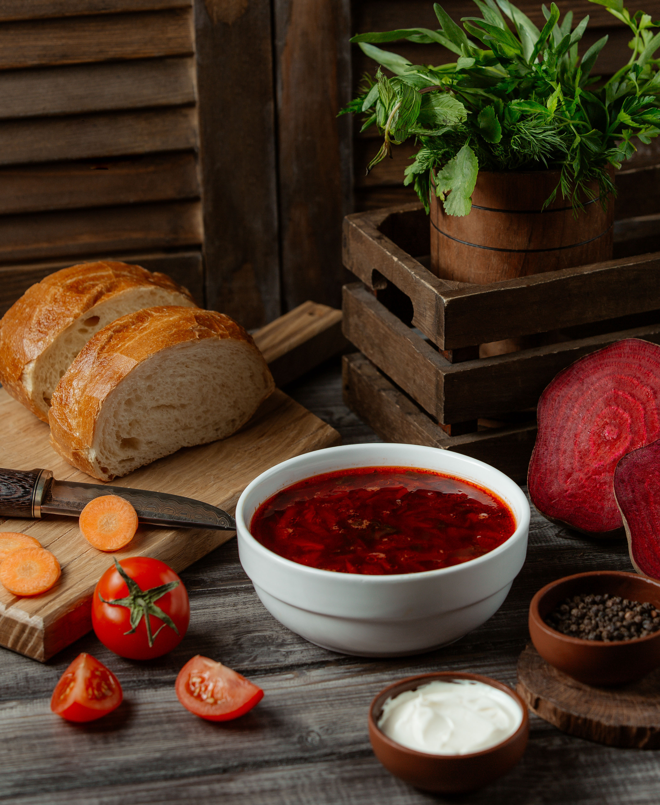

Borsh

Description
Ukrainian borshch is a hearty and flavorful soup that holds a special place in Ukrainian cuisine and culture. Known for its vibrant red color, this dish is primarily made from beets, which give it its signature hue, along with a variety of other vegetables such as cabbage, potatoes, carrots, onions, and tomatoes.
The broth is typically enriched with meat, often pork or beef, though vegetarian versions are also common. Garlic, dill, and bay leaves are used to add depth and aroma to the soup, while a dollop of sour cream on top is a traditional finishing touch, adding a creamy and tangy contrast.
Borshch is often served with dark rye bread or pampushky, small Ukrainian garlic buns, making it a satisfying and nourishing meal. Beyond its culinary appeal, borshch is a symbol of hospitality and tradition, frequently enjoyed during family gatherings, festive occasions, and everyday meals. It represents the rich agricultural heritage of Ukraine and is cherished as a comfort food that warms both the body and soul.
- Beets - 3 medium-sized, peeled and grated or finely chopped
- Cabbage - ½ a small head, shredded
- Potatoes - 3 medium-sized, peeled and diced
- Carrots - 2 medium-sized, peeled and grated
- Onion – 1 large, finely chopped
- Tomatoes – 2 large (or 2 tablespoons of tomato paste), finely chopped
- Garlic – 2-3 cloves, minced
- Meat – 300-500 g of pork, beef, or chicken (optional, for broth)
- Water or Broth – About 2 liters (use meat broth for a richer flavor)
- Bay leaf – 1-2 leaves, salt – to taste, pepper – to taste
- Place the meat (pork, beef, or chicken) in a large pot with 2 liters of water.
Add a pinch of salt and bring it to a boil. Skim off any foam that rises to the surface.
Reduce heat and simmer for 45-60 minutes until the meat is tender.
Remove the meat, let it cool, then cut it into bite-sized pieces. Set aside. Keep the broth.
- Peel and dice the potatoes.
Add them to the simmering broth and cook for about 10-15 minutes until tender.
- Heat 2-3 tablespoons of vegetable oil in a pan.
Add the chopped onion and grated carrots, sauté until softened (about 5 minutes).
Stir in the grated beets and cook for another 5 minutes.
Add the tomatoes (or tomato paste) and cook for another 5-7 minutes. Optionally, add a splash of vinegar or lemon juice to preserve the vibrant color of the beets.
- Shred the cabbage and add it to the pot with the broth and potatoes.
Let it cook for 5 minutes, then add the sautéed vegetables.
- Add bay leaves, salt, and pepper to taste.
Let the soup simmer gently for another 10-15 minutes to allow the flavors to meld.
- Mince the garlic and stir it into the borshch just before turning off the heat.
If using cooked beans, add them now.
- Remove the pot from the heat and let the borshch sit for 15-20 minutes before serving. This resting time enhances the flavor.
- Ladle the borshch into bowls.
Add a dollop of sour cream on top and garnish with fresh dill if desired.
Serve with rye bread or garlic pampushky for an authentic touch.